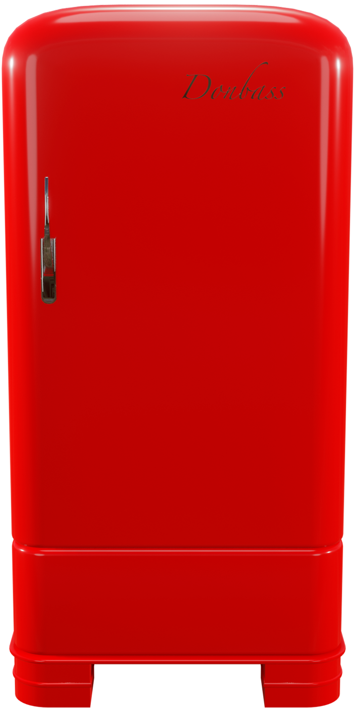

Кастомизируйте свой 57" дюймовый Donbass X
Система Air flow от компании Coal
Coal Trade In
Все деньги, полученные с продаж модели в данной рассцветке, пойдут на лечение людей борящихся со СПИДом.
Стоимость обмена зависит от состояния, года выпуска и конфигурации вашего устройства,
на которое распространяется действие программы обмена. Не на все устройства можно получить кредит.
Вам должно быть не менее 18 лет, чтобы получить право на обмен в обмен на кредит или подарочную карту Coal.
Компенсационная стоимость может быть использована при покупке нового устройства, отвечающего требованиям, или добавлена к подарочной карте Coal.
Фактическая стоимость указана на основании получения устройства, соответствующего описанию, указанному при расчете.
Налог с продаж может быть начислен на полную стоимость покупки нового устройства.
Для обмена в магазине необходимо предъявить действительное удостоверение личности с фотографией (местное законодательство может требовать сохранения этой информации).
Предложение может быть доступно не во всех магазинах и может отличаться в зависимости от того, осуществляется ли обмен в магазине или через Интернет.
В некоторых магазинах могут быть установлены дополнительные требования.
Coal или его партнеры по обмену оставляют за собой право отказать в любой сделке по обмену или ограничить ее количество по любой причине.
Более подробную информацию о обмене и утилизации подходящих устройств можно получить у партнера Coal по обмену.
Могут применяться ограничения.
Copyright © 2024 Coal Inc. Все права защищены.